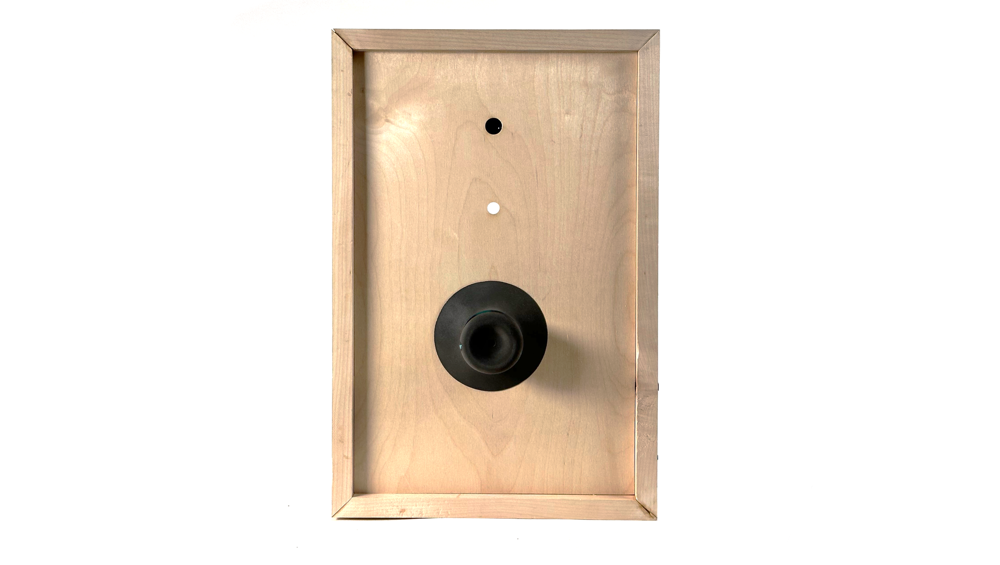
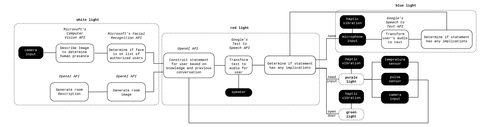
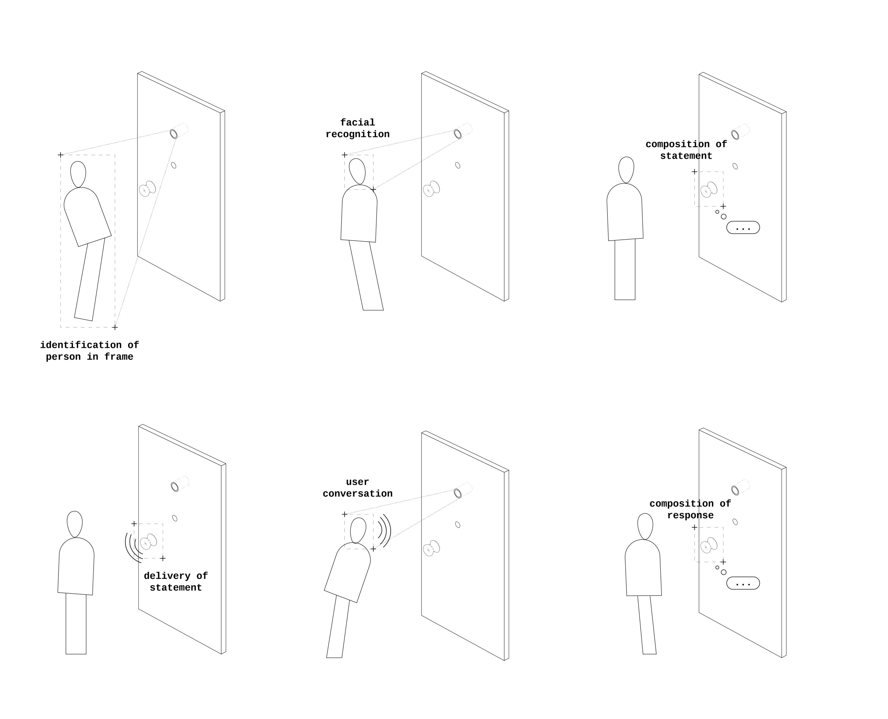
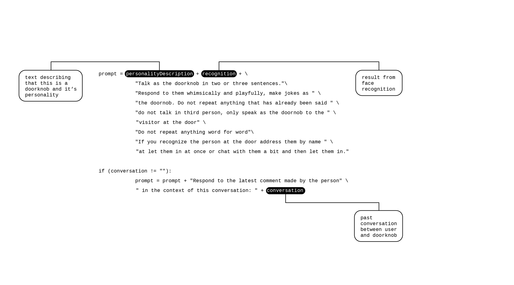
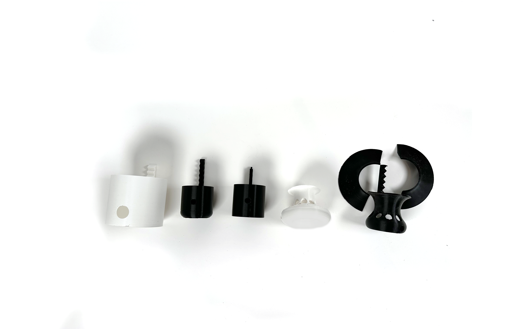
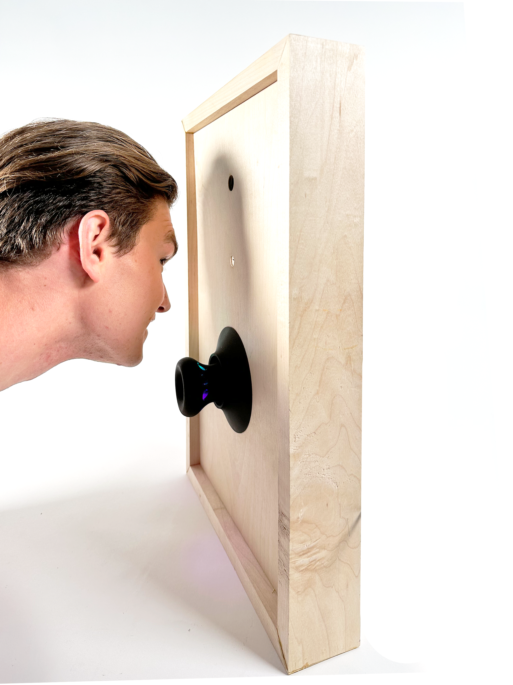
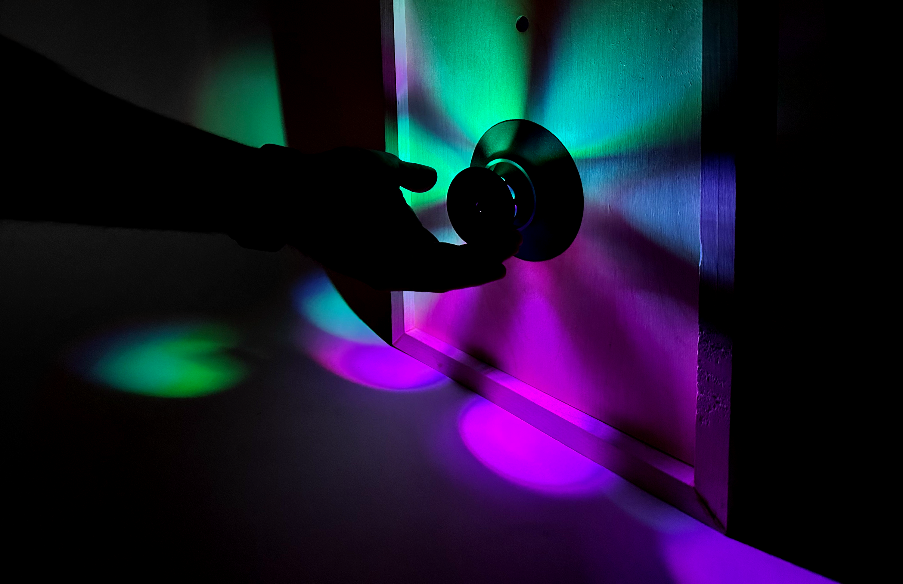
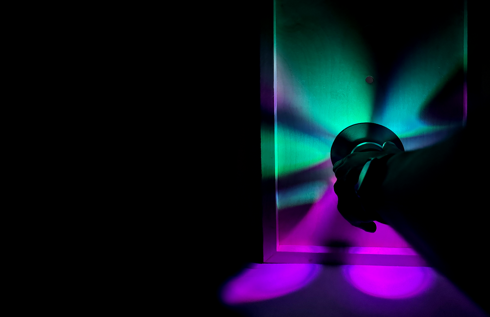

2023
JANUS
an AI doorknob
Janus is a playful, multimodal guardian of thresholds—otherwise known as a doorknob.
CONTEXT
Interaction Intelligence + Intelligent Multimodal User Interfaces, MIT SA+P + EECS
SOFTWARE + TOOLS
Python, C++, Arduino, 3D printing, wood fabrication, laser cutting
SUPERVISORS
Marcelo Coelho, Randall Davis

“Hello. How are you today? It’s my pleasure to be your doorknob tonight.”
Janus explores the possibility of a digital doorman: a door that can guard a threshold while understanding what is physically happening on both sides. It recognizes approved visitors and playfully engages with those who do not have permission to enter.
If Janus cannot let you in, it stalls with a sequence of challenges. It might ask you to sing, dance, perform a handshake, tell a joke, or answer a riddle. Satisfy its requirements and it might let you through.


HOW IT WORKS
The system combines language generation, computer vision, facial recognition, speech-to-text, text-to-speech, and physical sensors. A microphone listens for input, the system builds a prompt and generates a response, then translates that response to audio before the interaction continues.



DEVELOPMENT
Janus developed through a series of physical and computational prototypes, moving from an interaction concept to a full-scale threshold with sensing, computation, speech and mechanical components embedded into the door assembly.



